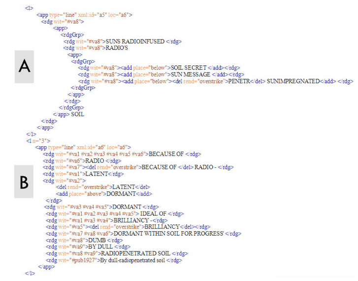
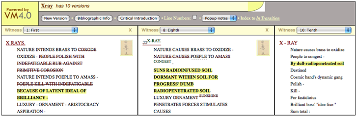
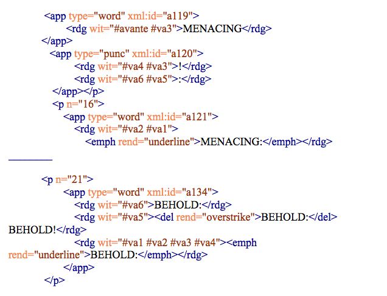
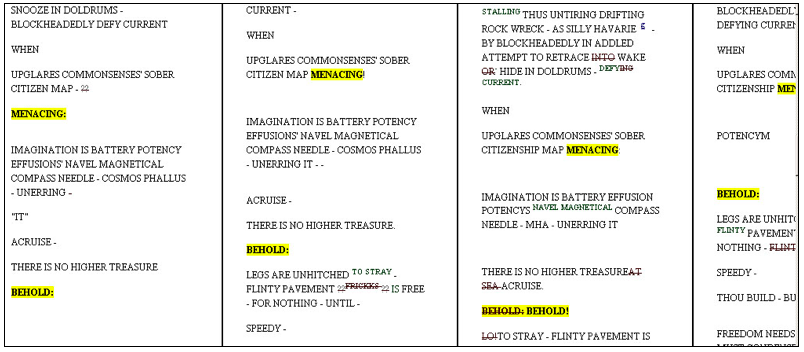
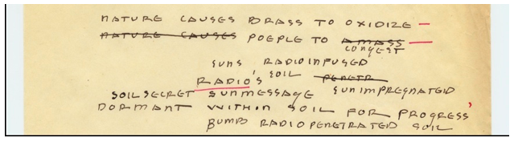
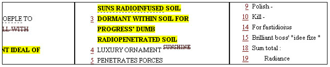
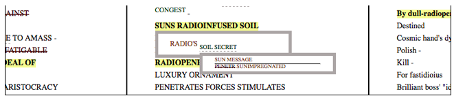
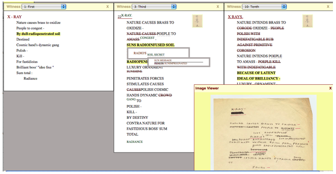
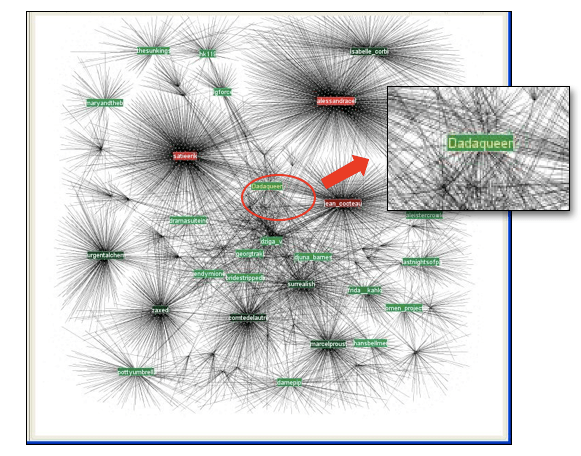

In Transition: Selected Poems
by the Baroness Elsa von Freytag-Loringhoven
Knowledge Representation and the Networked Text in In Transition
Abstract
This site represents a publicly available scholarly edition of twelve unpublished poetry manuscripts written by Freytag-Loringhoven between 1923 and 1927. This edition serves to provide access to a textual performance of her creative work in a digital environment. One aspect of textual performance theory to be explored in this introduction and in the edition in general is the notion of the networked text in the networked world. The network metaphor is at the basis of this edition in order to complicate the notion that meaning-making in an age of "transition" (both cultural and technological) is a new environment in which to read texts. In contrast, the textual network in which these twelve texts have always circulated—based primarily on reception, materiality, and themes both in the 1920s and now—presupposes the constant flow of computational networked systems in its current iteration as an electronic edition. Accordingly, this introduction to In Transition discusses theories of textual editing in terms of theories concerning the computational representation of text.
Though Djuna Barnes was once one of a limited number people with access to the Baroness Elsa von Freytag-Loringhoven's poetry manuscripts and letters, most of the Baroness's extant papers are now publicly accessible within the Papers of the Baroness Elsa von Freytag-Loringhoven in the Special Collections at the University of Maryland, College Park3 and The Little Review Records in the Archives Department at the University of Wisconsin-Milwaukee4. In addition, the Papers in College Park are in the public domain, making free, electronic access to these artifacts a possibility.5 When Barnes selected her texts for the posthumous "Selections from the Letters of Elsa Baroness Von Freytag-Loringhoven," which was edited by Djuna Barnes and published in transition (February 1928), she chose to put into circulation letters which encouraged a particular knowledge of the Baroness. The process for selection and engagement with the poems within In Transition: Selected poems by the Baroness Elsa von Freytag-Loringhoven has an impetus and a goal as well: to provide a freely accessible scholarly edition of the Baroness's unpublished poetry manuscripts, which serves to provide access to a textual performance of the Baroness's creative work in a digital environment.6 In response to In Transition, this piece discusses theories of textual editing in terms of theories concerning the computational representation of text.
I. Knowledge representation and editorial practices
John F. Sowa writes in his seminal book on computational foundations, that theories of knowledge representation are particularly useful "for anyone whose job is to analyze knowledge about the real world and map it to a computable form" (Knowledge Representation xi). Sowa's suggested approach to designing systems for knowledge representation is not dissimilar to the principles for editors designing editions set forth in the "Guidelines for editors of Scholarly Editions"7. Established by the Modern Language Association (MLA), the guidelines recommend that an editor "choose what to attend to, what to represent, and how to represent it" according to "the editor's theory of text" or "a consistent principle that helps in making those decisions." As such, an analogy can be made between these guidelines and Sowa's assertion about the application of knowledge representation: "Knowledge representation," he writes, "is the application of logic and ontology to the task of constructing computable models for some domain" (Sowa xii). Thus, Sowa's concept of logic ("pure form") maps to the MLA's consideration for how a text is represented in an edition; his use of ontology ("the content that is expressed in that form") maps to the MLA's concern with what is attended to or represented in an edition; and his consideration for the domain maps to the notion of an edition's underlying theory of text (Sowa xiii). Further, the MLA considers a scholarly edition "a reliable text" by measuring its "accuracy, adequacy, appropriateness, consistency, and explicitness" against what editors define as the edition's form, content, and theory of text ("Guidelines for Editors of Scholarly Editions"). Similarly, Sowa notes that knowledge representation is unproductive if the logic and ontology which shape its application in a certain domain are unclear: "without logic, knowledge representation is vague, Sowa writes, "with no criteria for determining whether statements are redundant or contradictory," and "without ontology, the terms and symbols are ill-defined, confused, and confusing" (xii). This discussion employs the language of knowledge representation in computation (through terms like domain, ontology, and logic) in order to complicate the term "digital edition" since such a moniker should define the goals of such an edition. In other words, the argument of a digital edition like In Transition is formed as much by the underlying theory of text (textual performance) as it is by its content (the networked text) and the particular application or form (a digital edition) it takes.
Knowledge representation is the work of all editors. Published in transition (February 1928), a year after "the Baroness"1 died of asphyxiation in a small apartment where she was living alone in Paris, Barne's "Selections" provides a case in point. In the last years of her life, the Baroness had become accustomed to sending her poetry and biographical sketches in letters to Barnes and had given her friend full reign over her words in order to "arouse interrest [sic] for me — help — sympathy" (UMD 2.262)2. "I send you all that happens to my hand — and you may select," the Baroness writes in another letter to Barnes, "you may use every word of any letter whatsoever!" (UMD 2.233) Barnes states in her introduction to "Selections" that her transcriptions are verbatim and that they represent the Baroness's "own" words, but the differences between the letters the Baroness wrote and the words Barnes "selected" are many. These changes seem to point less to a desire to replicate the Baroness's "own words" and more to the goal of arousing some interest and empathy in the Baroness's readers ("Selections" 19). Barnes's edition of the letters represents a picture of the Baroness quite different from one which could have emerged from reading her letters in manuscript.
Barnes "selected" (and changed) the words in the Baroness's letter that she believed effected more interest from transition's readers who might ultimately create an audience for an edition of the Baroness's poetry. For instance, in Barnes's version of a key passage she reorganizes erratic clauses and elides pointed references in order to present a more sympathetic portrait of the Baroness. In transition, the letter reads as follows:
I fight brave as I am and always was, but brave ones fall in war. I am not truly deranged even, but scattered — muted by fear, picking bits of heart flesh with its relentless beak, day and night, minute by minute, I must succumb soon. There are those who must be soiled to create, I must be clean. ("Selections" 27-28)
In comparison, the Baroness's original letter reads:
I am not truly deranged even - but scattered - muted by fear! Picking bits of heart flesh with its relentless beak day and night — minute by minute — unless by necessity of preservation in self defense I try artificially to render myself aloof to it — insensible. But — I am not - never a beat. It is artifice — I must succumb soon. I fight brave - as I am - always was - but brave ones fall dead in war! And world is at war. Mental nausea + permanent — for proud [unclear] exultant me — how in sense can I last? You see that. I am not "w.c. Williams" He thrives on it. It is his output — his must be soiled to create. I must be clean . . . . (UMD 2.265)
In Barnes's version of the passage, the agent or cause of the Baroness's derangement—her poverty and her bitterness—is elided. "The world is at war," the Baroness writes, and what she means is more figurative than literal, the figurative aspect of which is amplified by her other vehement responses to William Carlos Williams. In other writings, she argues that Williams is an inauthentic, bourgeois professional (a "wobbly-legged business satchel-carrying little louse") who "attacks art" because "W.C. does not care about words" ("Thee I call 'Hamlet of Wedding-Ring'" 110, 109). By supporting the likes of him, the Baroness implies, the world is at war with her, to whom "truth" and "authenticity" means "art." This message was not one that Barnes considered appropriate for garnering empathy or arousing interest in the Baroness's poetry, especially from an audience who had shown considerable favor toward Williams. A further testament to Barnes's cause is the choice to include both an obituary and—many pages later—the image of the Barones's death mask as accompaniment to Barnes's selection of letters in transition. Barnes selected these objects and her words to impart a knowledge of the Baroness as a sympathetic figure.
A. The domain and theory of text: textual performance
In Transition reflects a theory of text I am calling textual performance. Textual performance theory is in part based on John Bryant's notion of fluid text theory in which social text theory is combined with the geneticist notion that a literary work is "equivalent to the processes of genesis that create it;" within this theory, a textual event is a "flow of energy" rather than a product or a "conceptual thing or actual set of things or even discrete events" (Bryant 71, 61). As such, a text in performance can comprise multiple versions in manuscript and print, various notes and letters and comments of contemporaries or current readers, plus the element of performance—an element of time, space, and a collaborative audience—that work together in the meaning-making event of a text. Literary work is a "phenomenon," Bryant writes, " . . . best conceived not as a produced work (oeuvre) but as work itself (travaille), the power of people and culture to create a text" (61). Because the Baroness's "lifeart" is centered in the Dada model of the gallery and cabaret—and thus, real-time audience participation—this concept of the "flow of energy" within fluid text theory is a useful way of thinking about what is being engaged when a reader interacts with an electronic edition of her poetry.
B. The ontology and the content: the networked text
One aspect of textual performance theory I am exploring in the edition concerns the networked text in the networked world. The metaphor of the network is a useful image for considering how meaning-making in an age of "transition" (both cultural and technological) happens since the textual network these twelve texts have always engaged—based primarily on reception, materiality, and themes both in the 1920s and now—presupposes the constant circulation of networked systems. The notion of the network is used both by Bruno Latour and Jay David Bolter and Richard Grusin to ameliorate the polarities that exist in the current discourse between nature and technology and between "old" and "new" technologies. Notions of the "network" help to diminish the polarities within the overriding discourse. In We Have Never Been Modern (1993), Bruno Latour explores the notion that the hybridization of nature and culture in this age of new technologies has necessitated discourses of purification and denial; these discourses, he argues, seek to create an age of digital "revolution" that diminishes what has always been a cyborgian culture (48). "When we see them as networks,"Latour writes, "Western innovations remain recognizable and important, but they no longer suffice as the stuff of saga, a vast saga of radical rupture, fatal destiny, irreversible good or bad fortune" (We Have Never Been Modern 48). Bolter and Grusin also explore our current, perceived digital utopia as the result of the "double-logic" of "remeditation" (the "repurposing" of old technologies) in which "our culture wants both to multiply its media and to erase all traces of mediation" (Remediation 5). The network metaphor is useful for considering how In Transition provides for a textual performance by facilitating a reading experience or a representation of knowledge that is in constant circulation or "flow" of networked relationships.
This scenario, in which the making of meaning is in a constant state of transition, corresponds to a central theme within the edition. These twelve texts are included as expressions created during a time of transition in the Baroness's life between 1923 and 1927 when she moved from New York to Berlin and finally to Paris, but the edition also serves to represent a moment of transition in the culture of little magazines and the technologies of conversation during this time period, a period which sees the little magazine change shape from a venue that engages more popular textual performances and conversations about literature and art—such as the one represented by the inclusion of content in The Little Review—to a venue which begins to address an audience more attuned to and engaged with literature and poetry as a high art— such as that posed by what the editors of transition chose to include. With the selection of these poems, the textual network is determined by three primary relationships that engage the meaning-making possibilities of these texts. The first relationship is based on the reception environment, by the fact that the editors at transition magazine8 were interested in certain poems for their audience in the late nineteen-twenties.9 During the period between 1927 and 1929, three of the twelve poems included ("Café Du Dome," "Xray," and "Ostentatious") were published in transition while five of the other poems—"Ancestry," "Christ - Don Quixote - St. George" (a subsection of "Contradictory Speculations"), "Cosmic Arithmetic," "Sermon On Life's Beggar Truth," and "A Dozen Cocktails Please"— were under consideration by the transition editors (and ultimately rejected) for future issues.10 Thus, these eight poems share a relationship tied to a particular mode of reception and perceived audience.
A second relationship represented by the textual network within this edition includes the material space that some of these poems share, a relationship that in some cases overlaps with the ties just mentioned. In other words, in some cases, draft versions of certain poems appear on the verso or in the margins of the manuscripts for draft versions of other poems. For instance, versions of "Café Du Dome," "Ancestry," and "Sermon" appear on versions of "Ostentatious" and versions of "Orchard Farming," "Sermon," "Christ — Don Quixote — St. George," and Ostentatious" appear on versions of "Xray." The third interconnected relationship embodied by the content within this edition is one that is determined by thematic ties between poems written during this time period. The remaining three poems ("Purgatory Lilt/ Statements by Circumstanced Me," "Orgasmic Toast," "Matter Level Perspective") embody these nodes of the network, but the other poems share thematic ties as well, such as images of "radiance" in "Orgasmic Toast," "Sermon on Life's Beggar Truth," "Purgatory Lilt," and "Xray" or mathematic formulas in "Orgasmic toast," "Purgatory Lilt," and "Cosmic Arithmetic." All twelve poems participate by and through multiple and varied relationships based on reception, materiality, and theme within the textual network that was circulating between 1923 and 1927. In Transition reflects these themes and sets them into play by staging a textual performance that shows the relationships within this textual network.
C. Logic and form: digital surrogates at play in the Versioning Machine
Digital surrogates comprising encoded text are at play within the In Transition environment. Encoding a transcription of a printed or manuscript text is a method for creating a computable model of a text that can be instantiated or implemented with computer programs for a variety of applications such as search and retrieval, linguistic analysis, or visualizations. This modularity facilitates the various stagings witin a given textual performance. For instance, the encoded document includes logical and ontological metadata that can describe both the physical and the semantic nature of the manuscript. In lieu of simply transcribing the words that comprise the title of a poem such as "A Dozen Cocktails Please", encoding allows for defining this string of letters and spaces as a title: <title>A Dozen Cocktails Please</title>. As a result, encoding facilitates computations that include strings that have been marked "title" as opposed to those labeled "line" or "stanza." Currently, the TEI schema is the most productive standard available for creating a scholarly edition of the Baroness's poetry because it is able to express the dynamic network of relationships that exist when multiple versions of a poem are performing at once.11 The TEI schema is the result of an ongoing conversation among scholars across a wide variety of academic disciplines about the nature of text. An open, nonproprietary format, the TEI is included as an exemplary encoding standard in guidelines produced by both the National Endowment for the Humanities and the MLA's Guidelines for Editors of Scholarly Editions. Accordingly, it represents a logic that is part of a larger conversation about the dynamic nature of these textual components. Second, the TEI standard was created primarily for use with linguistic and literary documents; as such, the newest version of the standard (released October 2007) has a robust schema for the consideration of manuscript texts in multiple versions, making it suitable for the particular textual ontology on which a scholarly edition based on these kinds of texts depends.12
Methods corresponding to the Critical Apparatus" schema, called "parallel segmentation" and "location-referenced" allow an editor to designate and thus visualize linguistic codes (words, phrases, lines, paragraphs, etc.) and bibliographic codes (page images, page breaks, column breaks, and milestones) that correspond across various versions. For example, the poem "Xray," which was published in transition (October 1927) has nine extant versions including the published text. Across the versions there are some phrases that remain more or less the same, some phrases that change course and change back, and still other phrases that evolve quite dramatically in a perceptive, linear fashion. For instance, the first three lines of the first stanza of the published version read:
- Nature causes brass to oxidize
- People to congest -
- By dull-radiopenetrated soil . . .
In the first version, the first line is "Nature causes brass to oxidize," which changes to "Nature intends brass to oxidize" in version six. The second line, in the first version, is "Nature causes people to amass," which becomes in version six, "Nature intends people [sic] to amass;" this line evolves in version two to "Nature causes people to congest," and eventually becomes, in the published text, a truncated clause: "People to congest —." While the evolution of these lines are relatively easy to follow, the third line becomes something that seems entirely different if one merely looks at the last version in comparison to the first: "Because of latent ideal of brilliancy" becomes "By dull-radiopenetrated soil." As a result of the TEI parallel segmentation encoding, however, the different versions of "Xray" can be compared in a browser window using the open platform application called the Versioning Machine (VM)13 which renders the TEI XML (see Figure 1) into a dynamic HTML page using XSLT, CSS, and JavaScript (see Figure 2). Thus, while Figure 1 represents a static view of the third line of "Xray" as it changes across multiple versions, Figure 2 is an image from In Transition in which lines from various versions can be compared dynamically and differently depending on the scholar's needs. While the encoded text embodied in the TEI schema represents the script of a textual performance, the view in the VM depends on a real-time engagement with audience participation to make present the text in performance.

Figure 1: an excerpt of "Xray" in TEI encoded XML, versions one through eight and the published 1927 text

Figure 2: "Xray", versions one, eight, and the published 1927 text, in the Versioning Machine
It is useful to complicate the notion that the digital text in performance differs from a user's experience with the paper analog. As a computable model, Willard McCarty calls encoded text "reductive and fixed" since it cannot detail "the massive amount and complexity of detail for a microscopic phenomenon across 12000 lines of text" (Humanities Computing 58). Similarly, an encoded text cannot, in Jerome McGann's terms, capture the n-dimensional aspect of the "autopoetic" field. On the other hand, in an essay titled "Electronic Textual Editing: When not to use the TEI," John Lavagnino discusses the advantages of using an encoding standard such as that supported by the TEI (Text Encoding Initiative) for a scholarly edition. For a scholarly edition in which "the creation of new writing" such as scholarly apparatus is just as essential as the transcription of the original text, Lavagnino quite simply argues, "the TEI is applicable to your texts" (334). The difference between these two sentiments is remarkable. The former is summarily reductive in application while the latter seems unduly expansive in theory until one considers the nature of the difference: determining the standard or model for encoding a text depends on how the scholar defines the digital textual event in which it will be enacted. "Knowledge representation," Sowa writes "is the application of logic and ontology to the task of constructing computable models for some domain" (emphasis added; xii). McCarty's sense of the limitations of encoding are premised by his argument that the encoded text does not represent a productive computable model since the ontology created in an encoded text does not accurately represent, he argues, the original object nor is it structured in such a manner to record what it is not able to represent. Essentially, McCarty's concern is to build a better system of representation based on what could be learned from a given model within that system. Lavagnino, on the other hand, defines the function of an encoded text in terms of editorial scholarship. As scholarly editors, he argues, "we are engaged in analyzing texts and creating new representations of them, not in creating indistinguishable replicas" (Lavagnino 338). Unlike most printed editions, the representation of knowledge I am creating with In Transition is intended to elicit more questions than answers and to engage play, discovery, and inquiry that depends on the modularity of digital objects and the interactivity of digital interfaces. This edition encourages users to handle its digital surrogates and to move them around, to see the scholarly argument and to make and show their own readings and their own ways through the text.
II. The digital edition and textual performance
Applying the logic of the electronic edition (the form) and the ontology of the twelve networked texts to a computable model that represents textual performance is not a simple task—but perhaps this difficulty is to the point. Richard Poirier writes that modernist "texts are mimetic in that they simulate simultaneously the reading/writing activity;" thus, "[t]he meaning resides in the performance of writing and reading, of reading in the act of writing" (113). For this reason, he continues, modernist texts enact "a mode of experience, a way of reading, a way of being with great difficulty conscious of structures, techniques, codes and stylizations" (Poirier 114). In Transition seeks to set this "performance of writing and reading" into play by engaging the reader in some of the same "difficult" textual conditions the Baroness encountered in creating her poetry, such as the play between elements of ontology (content) and logic (form) and the temporal nature of writing in real-time while responding to audience participation.
A. The play between logic and ontology
The notion that simultaneous, and at times opposing, forces such as logic and ontology determine and are determined by textual performance took form for the Baroness in her belief that what she expressed and how she expressed it was interdependent with her conscious mode of expressing or performing it, whether that expression was through poetry or street performance or both. In a letter to Barnes, she refers to the strictures that logic imposes on writing poetry, noting that these strictures are actually productive and enabling forces. She writes to Barnes that her "rambling" way of "analytical speculation by emotional facts" is an "endless way —until now only to be mastered by rhythmical [sic] and symbolical force of poetry" in which "the logic is already the motive of the very start - and is contained in it and is the thing itself" (UMD 2.144). In another letter she notes, "I am all wave—first—arrangement—ability—comes later" since "the possibility of the structure grows your wings to 'create'" (UMD 2.45). The Baroness is saying that her "art" is apparent in a wave of imagination that comes before its logic or form and that the medium then serves as a catalyst or a sign post within the creative act. Thus, various poetic expressions may start from the same wave, but each medium's particular structure lends itself to a unique performance of that expression. Poems like "Orgasmic Toast," "Statements on Circumstanced Me," (also called "Purgatory Lilt" and "Hell's Wisdom"), and "Christ - Don Quixote - St. George," have multiple versions written as prose in paragraphs and other versions structured into more traditional stanza-and-line formats. The different forms were meaningful to the Baroness. She writes in a note on a version of "Purgatory Lilt" she has included in a letter to Barnes that "This is not a poem but an essay - statement. Maybe - it were better not to print it in this cut form - perpendicular but in usual sentence line — horizontal?" (UMD 2.226-227) Hans Richter calls this process of revision more dream-like than fancy: "What is important is the poem-work, the way in which the latent content of the poem undergoes transformation according to concealed mechanisms," transformations "that work the way dream-work strategies operate—through condensation, displacement, and the submission of the whole of the text to secondary revision" (Richter 80). Poirier puts it slightly differently: "[m]odernist writers, to put it too simply, keep on with the writing of a text because in reading what they are writing they find only the provocation to alternatives" (Poirier 113). For these reasons, the Baroness's manuscripts do not correspond to a sequence that manifests the teleological evolution of a poem. In some cases, the extant manuscripts show little evidence of a clear, creative evolutionary path within a text. To the contrary, a text is often a manifestation of experiments on a theme, making one version's relationship to another an example of alternative choices rather than a system of rough drafts leading to final versions.
The Baroness's compulsive desire to create multiple versions of each work is reflected in the ontology or content within which particular words, punctuation marks, and symbols move and change. Like the logic or structure, the material from which she could draw to create a particular performance shaped that performance. For instance, the Baroness believed that punctuation (what she calls "interpunction") should be as varied as words yet with an absolute truth or meaning beyond the visual symbol for pace or breath that represents the general system of language (much like Ferdinand de Saussure's langue) in which the general public participates. This sentiment is reflected in her asking Barnes,
. . . why does no scorn-mark mark of contempt—exist? I often miss it! see? that is one of thing's [sic] I will invent. . . to invent happiness—joy mark! Not only exclamation mark. Djuna—as I just see now—our interpunction—system is puny! One should be able to express almost as much in interpunction as words [. . .] in this new strange thing—to express absolute in it! As I did in sounds—like music! Wordnotes! (UMD 2.44)
While the logic represents the structure she used to fit these pieces together in a poem, here, the Baroness acknowledges that her ontology was the system of words and symbols from which she could draw. For instance, within the various versions of the poem "Sermon on Life's Beggar Truth," words are underlined and then not emphasized at all and dashes and colons are deleted and replaced with periods or spaces or exclamation points (and vice versa) in an order that seems to contradict an evolution of text. The VM space allows for an environment in which these textual differences can be compared across versions in a variety of ways without necessitating that the user research or present the versions in any specific order. In the following two examples the words "Menacing" and "Behold," which function as "heading" words for two prose stanzas, are changed in similar ways but not in a similar sequence. In versions one and two, "Menacing" and "Behold" remain consistent, underlined with a colon. In versions three through six, "Menacing" is not underlined but is separated from the following prose group by a space. In versions five and six it has a colon while in versions three and four, it has an exclamation point. "Behold" is always on its own line but the colon is deleted and replaced by an exclamation point in version five while versions three, four, and six maintain the colon. The word is underlined only in versions one through four. These observations are recorded in the XML (see Figure 3 ) and visualized in the VM interface (see Figure 4).

Figure 3: TEI XML excerpt from
"Sermon on Life's Beggar Truth"

Figure 4: The words "Menacing" and "Behold" compared across
version of
"Sermon on Life's Beggar Truth"
One may discuss the "evolution" of these words across the versions in order to come to some conclusion about the "final text," but since the sequence of the work's creation is not precisely clear and since the punctuation seems to change (and in some instances, change back) across texts without consistency, it is better perhaps to discuss the manner in which the text may be performed in various ways. The punctuation indicates that the words read differently depending on the particular instance of a text's reading, much like a piece that can be played fortissimo and at other times pianissimo or varied in rhythm and tone within the very same instance of play. In other words, the shifting punctuation does not belie an element of imprecision but rather signifies an element of chance that is a result of the varied audience or the situation in which the piece is played. Likewise, analyzing or displaying one's reading of the changes across versions depends on the ability to re-order the sequence of how the versions are displayed. The structure of the XML encoding and the VM interface facilitate the reader's engagement with how the content of each version relates across texts while also maintaining the unique nature of each individual expression. Ultimately, using the structure and logic of TEI's parallel segmentation and location-referenced encoding and the VM's capabilities for rearranging and manipulating how the versions are presented allows the user to see and construct different stories about the content of each expression, evoking a feeling of text that is "in play" or in performance according to the user's (the audience's) participation.
What makes it difficult to represent these alternate choices in a printed scholarly edition is the fact that the Baroness was a performer and was compelled to make every performance unique. Lines appear in some versions that never appear again and may have little relation to other lines added at a later or earlier date. Determining the nature of the TEI elements which help identify these changes means determining which relationships and which changes to set on the digital stage. Thus, critical, editorial choices that ensure textual modularity are involved in every aspect of the text's transformation from a transcript to a fully encoded TEI XML document to a text presented in an application such as the VM. These choices include deciding how to sequence the versions, choosing the lines that correspond across versions, and assessing the HTML rendering of such choices. For instance, the TEI XML (Figure 1) includes data within a structured logic that computer systems need to facilitate the scholar's ability to manage and manipulate various networks of relationships that comprise the bibliographic and linguistic codes of a text. Accordingly, in Figure 1, the logic represented by the "nested" structure indicates a particular relationship between the parent apparatus (<app>) element and the reading (<rdg>) elements "nested" within it (the children) that allows the editor to indicate and compare corresponding parts of the text across versions. In this manner, the <rdg> elements that appear between the opening (<app>) and closing (</app>) apparatus tags indicate which of the nine versions or witnesses (indicated by the numbers va1, va2, va3, etc. with the published version labeled as "pub1927") are associated with a particular aspect of the apparatus. In this case, the apparatus with id "a6" is being used to compare versions of the third line associated with each witness. In addition, the "loc" element (also "a6"), which links together readings from different apparatus elements, indicates that the <app> element "a6" is associated with the <app> element "a5." Consequently, the extra lines that appear in witness va8 above the third line (area "A" in Figure 1) are associated with this line of text across the versions. This "link" is visualized in Figure 2 in which lines are highlighted according to the <app> element (expressed in the excerpt of XML in Figure 1). By clicking on a word or phrase, the application automatically highlights associated words, phrases, and lines across readings based on two criteria: the presence of these readings within the same <app> element or the association of the same loc attribute on the <app> element. As such, the editor can use these structures to group or organize both unique versions and changes across versions. The advantage to these groupings is demonstrated by the user's ability to recognize them even when she seeks to order and re-order the sequence by which versions appear (or do not appear) within the browser, a capability that can be likened to re-arranging manuscript pages on a table according to the user's research needs.14 While the ability to re-order the sequence of the versions is useful for making comparisons and discovering various non-teleological arcs of formation and deformation within the networks of versions, it is equally important that the scholar can still realize the unique and discrete nature of individual versions.
B. Engaging temporality
Versions are a matter of perspective and situation just as they are a matter of textual difference. For instance, two versions of a poem titled "He" and "Firstling" appear on the same manuscript page. Next to the versions, the Baroness writes a note to Djuna Barnes saying "These two poems are the same. I leave it to you if you will print them both?" (UMD 4.54) Other versions of the poems that appear in the extant manuscripts are German versions. On yet another version, the Baroness writes to Barnes about combining "Firstling" and "He" but this time "Firstling" is in German: "What is interesting about the 2 together," she writes,
is their vast difference of emotion — time knowledge — pain. That is why they should be printed together. For they are 1 + 2 the same poem — person sentiment life stretch between one — divided — assembled — dissembled. The German one is young — naïv [sic] — ingenous [sic] — the English one ripe — experienced bitter. The German one is deep woe of child — in whoms [sic] very violence thus naïve expressed — lingers balm of recovery sensible. — The English one — as is superfluous to point out — is grim sophisticated. (UMD 4.58-59)
The Baroness reiterates her idea that the poems are versions of the same poem though they have different titles, are written in different languages and written in different countries. The details the Baroness emphasizes, however, are differences made by time and experience. In fact, what she is describing is not only her experience in writing the poems at different times in her life, but what would eventually be the readers' experiences in reading this poem at a time later than they were written. Textual performance necessitates similar expericences with temporal uncertainties or instabilities. For instance, in "Prose Fiction and Modern Manuscripts: Limitations and Possibilities of Text Encoding for Electronic Editions," Edward Vanhoutte's main contention is that a genetic textual edition can only be partially accomplished by the TEI standard. He cites "time and overlapping hierarchies" as the most problematic aspects of his attempt to encode modern manuscript material since "the structural unit of a modern manuscript is not the paragraph, page, or chapter but the temporal unit of writing" (Vanhoutte 172). He is not alone in contending that the TEI logic (the nesting elements) and its ontology (the aspects and behaviors of the text of which the elements are comprised) remain insufficient for representing modern textual events. On the other hand, perhaps it is not productive to assume that the TEI schema should be held culpable for the representation of every aspect of a textual performance. In "Psychoanalytic Reading and the Avant-texte," Jean Bellemin-Noël sites "chance" as the salient element within the textual event that mollifies the need to reproduce what could be called the text's originary temporality in the genetic edition. "Since the writing process is itself a production governed by uncertainty and chance," Bellemin-Noël writes, "we absolutely must substitute spatial metaphors for temporal images to avoid reintroducing the idea of teleology" (Bellemin-Noël 31). In other words, instead of attempting to reproduce temporality in the scholarly edition (an attempt that presupposes a teleological textual event), the goals of an edition with concerns about versions might be better served by engaging the element of uncertainty and chance that the temporal nature of textual events inevitably produce.
The facility to engage an element of chance, especially as it is engendered by space, is enhanced by a dynamic and manipulative interface to the textual event. Visualizations facilitated by a combination of text and image work well to produce a space that functions as a signifier for temporal uncertainty. For instance, in version three of "Xray," certain lines ("Suns [sic] radioinfused soil," "Radio's soil secret," "Radio's sun message," and "Radio's sunimpregnated soil") may be understood as alternative readings for the same point in a line of text because of their spatial arrangement (all radiating around the word "soil") on the manuscript page (see Figure 5). Or, since the text appears between the second and third line of text, the word cluster could be a kind of brainstorming cluster that may or may not have helped the writer develop the final phrase "Dumb radiopenetrated soil" that appears, for the first time in any version, on the line beneath the clustered constellation. Ultimately, uncertainty and chance are enacted by the spatial arrangement of the words on the page since it is impossible to ascertain which words were written first; consequently, our inability to decipher the exact chain of events is emphasized.

Figure 5: Excerpt from "Xray" manuscript, version three
Ultimately, our access to this level of uncertainty is enacted by the combination of text and image that the VM facilitates. Within the TEI, the editor is able to express alternative readings for a given textual moment by using the reading-group element (<rdgGrp>) within a "parent" reading <rdg> element to group additional "children" readings (see <app> element id "a5" in Figure 1, Area "A"). At the same time, TEI XML must be written in a linear form, first one reading, then another, which proscribes an order on text that is essentially unordered. For example, in Figure 6, a <rdgGrp> element is rendered by the presence of a dotted line under the phrase "Suns [sic] radioinfused". This line indicates that a mouseover will reveal alternative readings; yet, on the mouseover, the alternative readings are ordered, vertically, in the same order that the XML proscribes: first "Radios' soil secret" then "sun message" then "penetr sunimpregnated". In part, this linear orientation is proscribed both by the XML and the resulting HTML (of which the VM interface is constructed), giving the impression that there is an order to the phrases that is not necessarily evident on the manuscript page.

Figure 6: excerpt from "Xray" version three in the Versioning Machine

Figure 7: excerpt from "Xray," version three in the Versioning Machine

Figure 8: "Xray," version three in the Versioning Machine
C. Incorporating and responding to audience participation
The above discussion has sought to make transparent how ontology and logic combine within this edition's digital surrogates and how these surrogates in play with the VM interface produce essential elements of textual performance within In Transition. The VM environment that I have described above in which the text may be in play in different ways at different moments provides for a situation in which a particular instantiation of text is never the same from one moment to the next, but how does one engage the element of real-time, live-body, evocative performance that informed how the Baroness and her contemporaries engaged in her poetry within The Little Review culture and the Dadaist art scene of the 1920s? While the goal of creating this environment is to comprise embodied texts and textual bodies in conversation within a real-time textual performance, the work remains, in part, incomplete.
The principles that undergird In Transition are not in place to present the Baroness in the trajectory of history as much as to theorize a method for locating her and this selection of poetry in the now, for enacting a digital, n-dimensional space that is in the present. Accordingly, to complete this work we must imagine what is possible. To this end, consider the network visualized in Figure 9.

Figure 9: The Baroness fakester "Dadaqueen" visualized as a node in the MySpace network17
This figure visualizes eighty-six of the Baroness's more than seven hundred "friends" from her MySpace network,15 an online "social network site,"16 aimed at facilitating a user's ability to "(1) construct a public or semi-public profile within a bounded system, (2) articulate a list of other users with whom they share a connection, and (3) view and traverse their list of connections and those made by others within the system" (boyd and Ellison). Though it only shows links to eighty-six friends, Figure 9 shows approximately 10,000 more links to second-level friends. Now, imagine this visualization in motion, nodes moving closer together and farther apart as friends are made and disbanded, links stretching and shrinking in reaction, and imagine augmenting the Baroness's current profile, which presents biographical anecdotes about, images of, and personal "shout-outs" to the Baroness, with an instantiation of a digital edition of the Baroness's poetry as outlined above. In this dynamic environment the textual performance would be constantly changing as part of the community exchange of real-time textual bodies which are participating in making the Baroness poem a textual event that is live and in play. danah boyd writes about Friendster, one of the first social network sites, that "[r]ather than having the context dictated by the environment itself, context emerged through Friends networks" (boyd "Friends, Friendsters, and MySpace Top 8: Writing Community Into Being on Social Network Sites"). This metaphor of networked space allows for a temporal exchange that is tradition and development moving around a de-centered center, a center that better represents the idiosyncrasies inherent in a character like the Baroness, the company she kept, and the company her fakester18 keeps.
III. Conclusion
The knowledge represented and produced in creating and reading In Transition: Selected poems by the Baroness Elsa von Freytag-Loringhoven raises the same questions about theories of literature and text that The Little Review editors Margaret Anderson and Jane Heap may have considered in determining the place of the Baroness's poetry within The Little Review environment: does this poem reflect or engage the larger conversation going on both in the pages of this issue and in these offices and in our society about culture and literature? Is this poem dynamic? Can it anticipate or provoke multiple kinds of conversation and facilitate the production of new knowledge in terms of the environment in which it is engaged? In terms of the domain of this electronic edition, similar questions have been considered: in this online, digital text environment, which nodes of the networked text are in play? Which elements of the textual event best engage the domain at hand? What is that domain? Reflecting Latour's notion of the network, the networked text invoked within In Transition provides for a theoretical structure that allows for new anchors for consideration without necessarily disrupting those that have already been established. As such, remediation is instantiated and notions of a "digital revolution" are kept at bay: the old is being repurposed within the new while the metaphor of networked space keeps chance and temporality engaged in the present. This is not to say that In Transition accomplishes an engagement with all the nodes of the networked texts with which it is involved, but it does provide for a selection of texts and a representation of knowledge—a textual performance—of the Baroness's poetry that has not been staged in quite this way for quite some time.
Endnotes
1 I have chosen to call Freytag-Loringhoven "the Baroness" throughout this piece as a gesture toward the name by which she was called in The Little Review and which has generally become her "stage name" in modern cultural studies that focus on her street performances. In this, a discussion of her texts in performance, it seems suitable to maintain this element of the textual stage.
2. This number represents a reel and frame number from the University of Maryland microfilm of "The Papers of Elsa von Freytag-Loringhoven." All subsequent references are noted as UMD.
3 Please see the finding aid at https://www.lib.umd.edu/special.
4 Please see the finding aid at http://digital.library.wisc.edu/1711.dl/wiarchives.uw-mil-uwmmss0001.
5 Currently, the Papers of the Baroness Elsa von Freytag-Loringhoven collection is considered part of the public domain at the University of Maryland, but The Little Review archives at the University of Milwaukee-Wisconsin does not have the same status.
6 The Baroness Elsa von Freytag-Loringhoven Digital Library at https://www.lib.umd.edu/dcr/collections/EvFL-class/ includes seven Freytag-Loringhoven poems. It was created as a collaborative project by graduate students in the English Department and the College of Information Studies (CLIS) at the University of Maryland, College Park. It incorporates an earlier version of the TEI encoding standard (P4) and an earlier version of the Versioning Machine (v. 3.2) to encode and transform manuscript transcripts.
7 Please see http://www.mla.org/cse_guidelines.
8 Between 1927 and 129, transition was edited by Eugene and Maria Jolas, Eliot Paul (until 1928), and Harry Crosby (until 1929).
9Reception here is considered as part of a "triangular intertextuality" or only as one aspect of the "influences of biography, reception, and textual reproduction" (Smith, Rowing in Eden 2).
10 This information is indicated in two letters between the Baroness and Marie Jolas at transition. The letter from the Baroness asks the editors to include a dedication in "A Dozen Cocktails Please" to "Mary R.S." and to change a line in "Sermon on Life's Beggar Truth." While Jolas's return letter, dated October 12, 1927, does not mention "Sermon," she does note that they "are keeping for future use" the poems that the Baroness sent in with "Contradictory Speculations," namely "Ancestry," "Cosmic Arithmetic," "A Dozen Cocktails Please" and "Chill." "Chill" is not included in this edition because there are two poems by the Baroness titled "Chill," either of which could have been the one sent to transition (UMD 2.905).
11 Of course, there are many discussions about the limitations of the TEI standard. For example, in his desire to create an electronic edition that expresses the time and space dimension a cache of multiple versions necessarily engages, Edward Vanhoutte discovers that speech elements serve his editorial principles since he considers his project to be a recording of the "author" having a conversation with the biographical writer (Vanhoutte 175-176). Other discussions include Renear et al., Hockey (specifically pgs. 24-28), and Huitfeldt.
12Certainly, publishing a multi-version textual phenomenon is not unprecedented in scholarly editions. The Waste Land; A Facsimile and Transcript of the Original Drafts Including the Annotations of Ezra Pound, edited by Valerie Eliot and Hans Gabler's synoptic edition, Ulysses: The Corrected Text (1986) both present multiple versions of well-read texts, though in these cases, a "final" or corrected text is privileged. Alternative versions of a given work, sometimes without clear teleological assumptions about a work's evolutionary progression are presented in Thomas Johnson's The Complete Poems of Emily Dickinson (1955) and in The Poems of Emily Dickinson: Variorum Edition (1998) edited by R.W. Franklin. Modernist texts have also been re-presented and re-published in this way in Becoming Marianne Moore: the Early Poems, 1907-1924 (2002) edited by Robin G. Schulze and Nightwood: the Original Version and Related Drafts (1995) edited by Cheryl J. Plumb. In these cases, versions of a work are presented in such a way that the "final draft" is not privileged, in which the notion of a final draft is summarily deconstructed. In fact, in each case—including the above-mentioned editions of Ulysses and The Waste Land—the presentation of alternatives forces us to reconsider what has long been considered the "final" or published version of a Dickinson, Moore or Eliot poem and of Barnes's or Joyce's well-read novels.
13More information about the Versioning Machine is at http://www.v-machine.org/. The iteration used for this project is based on VM version 4.0 with some modifications I implemented. These modifications are described at vmchanges.jsp.
14Of course, the similarity between laying pages on a table and moving them in the VM environment and is quickly dispelled when one considers that the digital space is still restricted by the HTML presentation which, in the VM necessitates a linear, left to right orientation. However, as is discussed later in this piece, there are other elements on the page which help emphasize these restrictions and therefore contribute to an aspect of editorial transparency concerning the impact that digital, material conditions have on editorial strategies.
15MySpace is one of the more popular and populated online social network sites. Please see the Baroness's page at http://www.myspace.com/dadaqueen. A more detailed discussion of the use of online communities like MySpace within the space of an electronic edition focused on textual performance appears in the previous chapter.
16In accordance with the criteria that boyd and Ellison establish, the term "social network site" is being used consciously to define "social network sites" as a subset of a larger category of social networking software, social media, or collaborative software, which might include blogs, wikis, or social bookmarking (such as del.ico.us or Flickr).
17The data used to form this visualization was extracted and pre-processed by Romain Vuillemot, a visiting doctoral student at the Human Computer Interaction Lab (HCIL) at the University of Maryland, College Park. It took approximately four hours to gather and extract the data from MySpace for a total size of 1.2 G of data. That data was then imported into SocialAction (http://www.cs.umd.edu/hcil/socialaction/) an application created by Adam Perer and Ben Shneiderman at HCIL.
18A fakester, in this case, represents a "real" identity that has been assumed by an online user.
Works Cited
Bellemin-Noël , Jean. "Psychoanalytic Reading and the Avant-texte." Genetic Criticism: Texts and Avant-Textes. Ed. Jed Deppman, Daniel Ferrer, and Michael Groden. Philadelphia: University of Pennsylvania Press, 2004. 28-35.
Bolter, J. David, and Richard A. Grusin. Remediation: Understanding New Media. Cambridge, Mass: MIT Press, 1999.
boyd, danah. "Friends, Friendsters, and MySpace Top 8: Writing Community Into Being on Social Network Sites." First Monday 11.12 (2006). <http://www.firstmonday.org/issues/issue11_12/boyd/index.html>.
boyd, danah m. and Nicole B. Ellison. "Social network sites: Definition, history, and scholarship." Journal of Computer-Mediated Communication 13.1 (2007): article 11.
Bryant, John. The Fluid Text: A Theory of Revision and Editing for Book and Screen. Ann Arbor: University of Michigan Press, 2002.
von Freytag-Loringhoven, Elsa. "Selections from the Letters of Elsa Baroness Von Freytag-Loringhoven." Ed. Djuna Barnes. transition 11 (1928): 19-30.
—. "Thee I call 'Hamlet of Wedding-Ring': Criticism of William Carlos William's 'Kora in Hell' and why . . . Part II" The Little Review 8:1 (Autumn 1921), 108-11: 110, 109.
—. "Xray." transition 7 (October 1927): 135
Hockey, Susan M. Electronic Texts in the Humanities: Principles and Practice. Oxford: Oxford University Press, 2000.
Huitfeldt, Claus. "Scholarly Text Processing and Future Markup Systems." 18 Oct 2007 <http://computerphilologie.uni-muenchen.de/jg03/huitfeldt.html>.
Latour, Bruno. We Have Never Been Modern. Cambridge, Mass: Harvard University Press, 1993.
Lavagnino, John. "Electronic Textual Editing: When not to use TEI." Electronic Textual Editing. Ed. Lou Burnard, Katherine O'Brien O'Keeffe, and John Unsworth. New York: Modern Language Association of America, 2006. 334-338.
McGann, Jerome. "Marking Texts of Many Dimensions." Companion to Digital Humanities (Blackwell Companions to Literature and Culture). Ed. Ray Siemens, John Unsworth, and Susan Schreibman. Oxford: Blackwell Publishing Professional, 2004. 198-217.
—. "Visible and Invisible Books: Hermetic Images in N-Dimensional Space." Literary and Linguistic Computing: Journal of the Association for Literary and Linguistic Computing 17.1 (2002): 61-75.
Poirier, Richard. "The Difficulties of Modernism and the Modernism of Difficulty." Critical Essays on American Modernism. Ed. Michael Hoffman and Patrick D. Murphy. New York: G.K. Hall & Company, 1992. 104-114.
Renear, Allen et al. "Refining our Notion of What Text Really Is: The Problem of Overlapping Hierarchies." Research in Humanities Computing. Oxford University Press, 1996.
Richter, Hans. Dada: Art and Anti-Art. New York: McGraw-Hill, 1965.
Sowa, John F. Knowledge Representation: Logical, Philosophical, and Computational Foundations. Pacific Grove, CA: Brooks Cole Publishing Co., 2000.
Vanhoutte, Edward. "Prose Fiction & Modern Manuscripts." Electronic Textual Editing. Ed. Lou Burnard, Katherine O'Brien O'Keeffe, and John Unsworth. New York: Modern Language Association of America, 2006. 161-180.